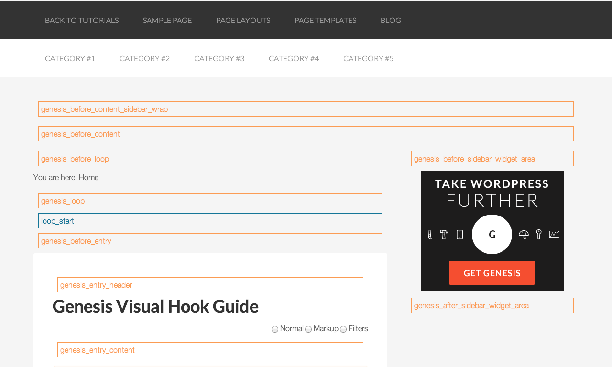
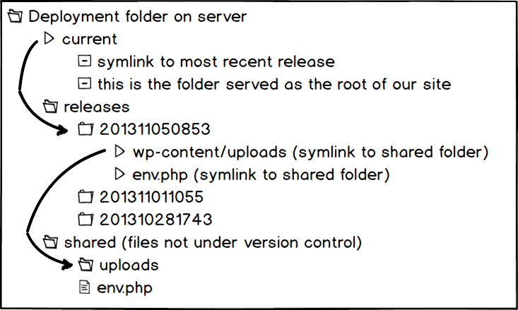

This is how we do it
Designers, Developers,
Clients & Users
Created by
#wpsfo
So many new shiny
Content Strategy, Mobile First
Backbone, Ember
Compass, Sass
Bootstrap, Foundation
Grunt, Capistrano
Building Blocks of Collaboration
Design
Interface
Development
All of this is tied together with...
User Experience
Who we are
Antonio, Grant, Jesse, and Michael
Break down traditional silos
Silo
User Experience Design Front End Development
Sprint
Sprint 1 Sprint 2 Sprint 3 Sprint 4
Collaborative
Sprint 1
Focus on Content
Hypothesis
Stakeholder Interviews
Motivations
Q. What aspects of the site are most important to you?
"That it makes investors happy, and that we don't keep getting negative reviews about it."
"That it is easy for external researchers to find our online software tools. It is basically impossible to find them now."
"Clear information on our research"
"All pages are important but probably the home page, "About" and "News" are most important."
Frustrations
Navigation is atrocious. Content has been made so limited that there is very little useful content for external people to find if they're looking for it.
Overall, I think the site lacks visual impact and its hard to find what you're looking for. I would like to see the navigation dramatically improved, as well as the look and feel so that its graphically impactful and helps focus visitors on the most important news and information. The current site is flat and not compelling.
Pattern Recognition
User, Content & Form
Epics
Motivation
We desire a site that appeals to investors that clearly identifies and our researchFrustration
We need improved navigation that allows users to explore our content on a more graphic levelContent Hierarchy
Find value and overlap between end users and your content
Value Matrix
Create the Matrix as a Team
- Define the key dimensions of your user types
- Pick 2 dimensions from the list that have a unique relationship
- Plot users along the resulting grid based on your interviews
Content Stack

How to Create your Content Stack
- Add up the Volume of demand for a particular content piece
- Balance this volume with the Influence of your key users
- Create a Content Stack according to the cumulative value
What Have We Done?
- Epics: Story
- Value Matrix: Users
- Content Stack: Hierarchy
- UX Framework for future research
Sprint 2
It's all going to break
Component Design
- Respect the Content Hierarchy
- Establish a Visual Pattern Library
- Model the Front End as Partials
Front End Interface
Responsive Thinking
Grids are an Enhancement
- Storytelling comes first
- Design focuses on content one piece at a time
- Establish a vertical type grid and rhythm
Semantic Photoshop
Source vs Layers
- Ability to do rapid high fidelity details
- Allows designer to sketch basic markup objects using layers and groups
- Facilitates a tactile quality to components and objects
- Creates distance between the design and the development
- Focuses on details too quickly and not broad progressive enhancement
- Doesn't benefit from the cascade
Style Guide
Pattern Library
Design in Source
-
Provides a more accurate model to the client and developer.
-
What they see is what they get.
-
Makes the designer responsible for UI complexity and responsiveness
-
Allows the designer a level of quality control they didn't have before
-
DRY components mean less work and more independently responsive parts
- Allows for experiments and testing of flows and new features
Know Your Material
Mobile First & Source Order
Genesis Framework
- Created by Studiopress
- Install parent theme first to get the client into the CMS
- Responsive out of the box
- Create a custom child theme
Genesis Hooks
Hook it Up
A Closer Look
Hooks & Parts Inventory
Sprint 3
Developing Empathy
Adding Interaction
Design in Action
- Interactive events are static at first. Allows for progressive enhancement to be built into the components
-
Designers should play with JavaScript so they have a basic understanding of what can be done
-
Collaboration between team members allows for interdisciplinary conversations about user flows.
-
"Just in time" events emerge from the interplay of user needs and tech feasibility
The Development Environment
- Pull down project
- Install Dependencies (Sass + Compass)
- Share Database dump
- Synch Database
- Pray, refresh browser, troubleshoot
- Repeat step 5
Time consuming
Instead, we use Virtual Machines
- Easier way to replicate and share development environments
- Dependencies like Ruby, Sass + Compass are installed on VM
- Local project folder is shared with VM, everyone continues using desired code editor
We’re all on the same page
- Development environments match
- Frameworks all the same version, less room for conflict
Build Virtual Machine and provision
$: vagrant package
Upload to AWS S3
Get the team into the dev environment
Install Vagrant + VirtualBox
then:
$: git pull origin master
$: vagrant up --provision
- Machine downloads, starts and provisions
- Compass is already watching project
- Developers can start working
Time to get the team into the dev environment
Vagrant Up!
- Machine downloads and starts
- Front-end developer connects with vagrant environment
- Start working in Sass
- Compass is already watching project
Concatenate and Compress
We like Grunt for this
- Automated task runner: Minification, concatenation, etc
- Allows you to develop in uncompressed, easy to read JS files
- Server single, minified file on production
Grunt Configuration
Load scripts conditionally
if( ENVIRONMENT === 'local' ) {
// Un-minified scripts.js + plugin files for easier development
wp_enqueue_script( 'jquery-plugins', 'theme/assets/js/_plugins.js',
array('jquery'), false, true );
wp_enqueue_script( 'site-scripts', 'theme/assets/js/_scripts.js',
array('jquery', 'jquery-plugins, false, true );
} else {
// minified app.js with plugins combined in one file for production
wp_enqueue_script( 'site-scripts', 'theme/assets/js/scripts.min.js',
array('jquery'), false, true);
}
Make sure your production environment is ready
- Make sure your production environment is ready
- Do you have a domain?
- Use a WP managed host
Sprint 4
Plug it In
Custom Coding
WordPress is now a robust CMS
WP Alchemy
Custom Meta Boxes
- PHP Class written by Dimas Begunoff (deem-uss begun-off)
- Great abstraction of your custom meta box code
- Keep the html of your meta boxes separated from your logic
- Great documentation
Great looking Meta Boxes

Clean Abstraction
Template Part: metabox-property.php
<?php $mb->the_field('address_1'); ?>
<?php $mb->the_field('display_address'); ?>
<?php $mb->the_field('google_map'); ?>
<?php _e('Paste Google Map iframe HTML code.'); ?>
<?php $mb->the_field('price'); ?>
<?php _e('Price in whole USD. Do not include "$" or ",".'); ?>
Posts 2 Posts
- Plugin written by Silviu-Cristian Burcă (scribu) and Alex Ciobica
- Building relationships between your post types is very easy now
- Great documentation
Define Your Relationships
// Properties to Neighborhood Connection
p2p_register_connection_type( array(
'name' => 'properties_to_neighborhood',
'from' => 'property',
'to' => 'neighborhood',
'cardinality' => 'many-to-one',
) );
// Facts to Neighborhood Connection
p2p_register_connection_type( array(
'name' => 'facts_to_neighborhood',
'from' => 'fact',
'to' => 'neighborhood',
'cardinality' => 'many-to-one',
) );
// Facts to Property Connection
p2p_register_connection_type( array(
'name' => 'facts_to_properties',
'from' => 'fact',
'to' => 'property',
'cardinality' => 'many-to-many',
) );
Simple Admin For Relating Content

Set up your deployment and build process
Automated deploy FTW!
- WPEngine git deployment!
- Let WPEngine handle WordPress core
- Put wp-content folder in a git submodule
- Use grunt to sftp deploy minified/concatenated files
Managed Host
- Capistrano for deployment over ssh
- Multi environment deploy (production, staging, dev)
VPS
Capistrano
- Upload only files that have changed
- Whoops!: One command to rollback
$ cap deploy:rollback - Remote control of server from local computer
- Easily deploy files under version control (code) separate from content (image uploads)
- Multistage: Deploy to multiple servers
Capistrano Setup

$ cap deploy:setup
$ cap deploy:check
$ cap deploy
$ cap deploy:rollback
$ cap production deploy
Capistrano Config
# Application name - used on shop for deployment directory
set :application, "application-name"
# Options
set :use_sudo, false
set :keep_releases, 5
# Source Control - defaults to git
set :scm, :git
# Repository
set :repo_user, "me"
set :repo_name, "project"
set :repository, "git@github.com:#{repo_user}/#{repo_name}.git" # Your clone URL
# Default repository branch to checkout
set :branch, "master"
set :deploy_to, "/var/www/#{application}"
# Hooks that specify when to run tasks
after "deploy:update_code", "shared:make_symlinks", "shared:deploy_js"
after "deploy", "deploy:cleanup"
Capistrano Tasks
namespace :shared do
desc "Symlinking files"
task :make_symlinks, :roles => :web do
run "ln -nfs #{shared_path}/env.php #{release_path}/env.php"
run "ln -nfs #{shared_path}/uploads #{release_path}/wp-content/uploads"
end
desc "Minify and upload css and js files"
task :deploy_assets, :roles => :web do
run_locally( "cd ..; grunt")
upload( "#{theme_path}/lib/js/scripts.min.js",
"#{release_path}/application/wp-content/themes/mytheme/lib/js/scripts.min.js" )
upload( "#{theme_path}/style.min.css",
"#{release_path}/application/wp-content/themes/mytheme/style.min.css" )
end
end
Release is optional
- The Internet is never done
- Sometimes the client just isn’t ready for “release”
- Your timeline and your client's might not match
Introducing the Product Cycle
- Iterative, rinse and repeat cycles
- Continue to focus on outcomes instead of deliverables
- Enhancements to the current product
Unicorns are cool,
but friends are better
Know your strengths
and when to ask for help.
Develop empathy for the
talents of others
- Stronger end product
- Less roads blocks in the process
- Shift focus from deliverable to outcomes
- No more CYA
- More fun!